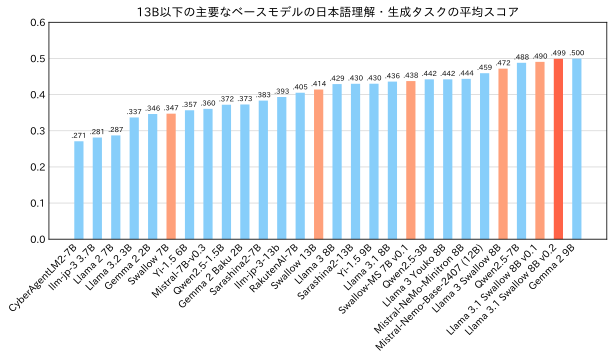
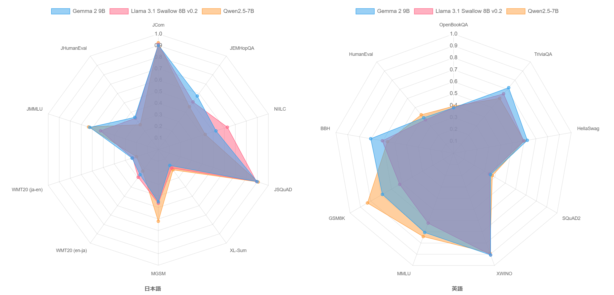
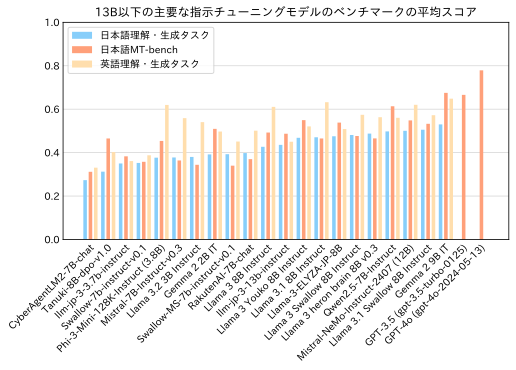
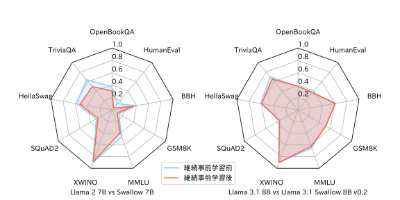
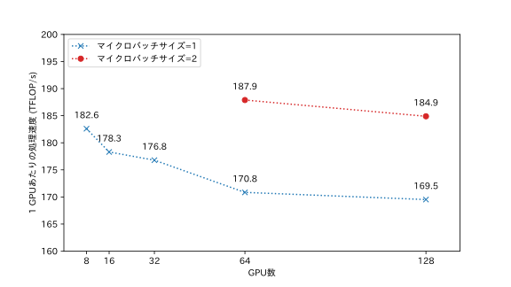

2024年10月8日
Llama 3.1 Swallow
Llama 3.1 SwallowはLlama 3.1の英語の能力を維持しながら、日本語の能力を強化した大規模言語モデル (8B, 70B) です。モデルのパラメータ（重み）がHuggingFace上で公開されていますので、Llama 3.1ライセンスに従う限り、研究や商業目的などで利用できます（ただし、指示チューニング済みモデルの利用においては、Llama 3.1ライセンスに従ったうえで、Gemma利用規約の利用制限に抵触してはいけません）。Llama 3.1 Swallowは米Meta社のLlama 3.1をベースに、東京科学大学情報理工学院の岡崎研究室と横田研究室、国立研究開発法人産業技術総合研究所の研究チームで開発されました。Built with Llama.

旧型（より性能の高いモデルが開発・公開されています）
公開モデル
更新履歴
- 2024-12-30: Llama-3.1-Swallow-70B-Instruct-v0.3を公開し、ウェブサイトを更新しました。Llama 3.1 Swallow 8B Instruct v0.3と同じデータで指示チューニングを実施し、日本語のマルチターン対話能力を改善しました。v0.1とv0.3の違いは指示チューニングのみで、ベースモデルはLlama 3.1 Swallow 70B v0.1で共通です（このため、v0.2およびベースモデルのv0.3は欠番となります）。今回のリリースは、Swallowチームの最新の知見をモデル構築に取り込んだマイナーアップデートで、バージョン0.1に不具合がある訳ではありません。
- 2024-12-23: Llama-3.1-Swallow-8B-Instruct-v0.3を公開し、ウェブサイトを更新しました。v0.3では、新たに開発されたデータで指示チューニングを実施し、日本語のマルチターン対話能力を改善しました。日本語MT-Benchの平均スコアにおいて、v0.2からv0.3で8.4ポイントの性能向上が得られ、このクラスのモデルの中ではトップクラスのスコア（0.6424）を達成しました。また、マルチターン対話時の指示追従能力を改善しました。v0.2とv0.3の違いは指示チューニングのみで、ベースモデルはLlama 3.1 Swallow 8B v0.2で共通です（このため、ベースモデルのv0.3は欠番となります）。今回のリリースは、Swallowチームの最新の知見をモデル構築に取り込んだマイナーアップデートで、バージョン0.1や0.2に不具合がある訳ではありません。2024年10月末でABCI 2.0の運用が停止したことに伴い、Llama 3.1 Swallow 70Bの新しいバージョンは構築できない状況が続いています。後日、機会がありましたら70Bのモデルもアップデートしたいと思います。
- 2024-11-11: Llama-3.1-Swallow-8B-v0.2とLlama-3.1-Swallow-8B-Instruct-v0.2を公開し、ウェブサイトの記述を更新しました。v0.2における変更点は、日本語の事前学習データの品質改善、プログラムコードの学習データの品質改善、学習データの日英配合比率の見直しです。また、Llama 3.1 Swallow 8B Instruct v0.2はLlama 3.1 8B Instructからの継続事前学習とし（v0.1ではベースモデルからの継続事前学習でした）、さらに指示チューニングを行っています。これらは、Swallowチームの最新の知見をモデル構築に取り込んだマイナーアップデートであり、v0.1に不具合がある訳ではありません。なお、2024年10月末でABCI 2.0の運用が停止したことに伴い、Llama 3.1 Swallow 70Bのv0.2は構築が間に合いませんでした。後日、機会がありましたら70Bのモデルもアップデートしたいと思います。
- 2024-10-08: Llama-3.1-Swallow-8B-v0.1, Llama-3.1-Swallow-8B-Instruct-v0.1, Llama-3.1-Swallow-70B-v0.1, Llama-3.1-Swallow-70B-Instruct-v0.1 を公開。また、NVIDIA NIMのサービスとして、Llama 3.1 Swallow 8B Instruct v0.1 と Llama 3.1 Swallow 70B Instruct v0.1 同時公開。
Llama 3.1 Swallowのライセンスは米Meta社のLlama 3.1ライセンスを継承しています。また、指示チューニング済みモデルであるLlama 3.1 Swallow 8B InstructおよびLlama 3.1 Swallow 70B Instructの利用においては、Llama 3.1ライセンスにに従ったうえで、Gemma利用規約の利用制限に抵触してはいけません。このライセンスおよび利用制限（Instructモデルのみ）に従う限りにおいては、研究および商業目的での利用が可能です。
性能
Swallowの開発チームは、高い言語理解・生成・対話能力を発揮する大規模言語モデルの構築方法やメカニズムを明らかにするため、日本語に強い大規模言語モデルを目指して研究開発を進めています。 また、大規模言語モデルの開発の「レシピ」を探るため、研究チームで試作した大規模言語モデルの評価実験に加え、他の企業や研究機関で開発された大規模言語モデルの評価実験も行っています。 その実験回数は2024年4月から10月現在までで、400回を超えています。
Swallowプロジェクトでは、幅広い用途で利用できるように、また必要に応じて応用に特化したファインチューニングを行いやすいように、特定のタスクを性能を上げるのではなく、汎用性の高い大規模言語モデルを目指しています。 そこで、2024年度のSwallowプロジェクトでは、常識的な知識を問う質問応答タスク、言語生成能力を測定する自動要約や機械翻訳、一般教養を問う試験問題、論理的思考力を反映すると言われる数学やコード生成のタスクを取り入れ、日本語理解・生成タスクとして10件のデータセット、英語理解・生成タスクとして9件のデータセットで評価実験を実施しています。 また、日本語の対話能力を測定するため、GPT-4をジャッジとした日本語MT-Benchの評価を行っています。
全てのタスクにおいて、評価スコアは0 (最低) から1 (最高) までの範囲の値をとります。 なお、我々の日本語MT-Benchの評価結果が（たとえスコアを10倍して10点満点に換算しても）外部リーダーボードの評価結果よりも低いことが確認されています。多くの外部リーダーボードが応答文の評価にGPT-4 (gpt-4-0613) を利用していますが、我々はGPT-4 (gpt-4-1106-preview) を利用しているため、スコアの相違を引き起こしていると推測されます。調査の結果、我々と外部リーダーボードの評価結果には大きな差異があるものの、モデル間の順位はほとんど変わらないことが分かりました。そのため、（すでに多くの評価を完了していたこともあり）GPT-4のバージョンを変更せず評価を続行しています。 評価の詳細については日本語LLM評価を参照してください。
8Bベースモデル
大規模言語モデルの性能はモデルの規模（パラメータ数）が大きいほど高くなりやすいので、モデル構築のレシピの善し悪しを調査するには、同規模のモデルと比較するのが鉄則です。 ただ、より規模の大きい・小さいモデルと比較することは、利用者がモデルを選択するときの参考になるかと思いますので、Llama 3.1 Swallow 8Bの性能を13B以下の大規模言語モデルと比較します。 パラメータ数が13B以下の主要なベースモデルに関して、日本語理解・生成タスクの平均スコアの高い順に並べたグラフを以下に示します。

Llama 3.1 Swallow 8B v0.2の日本語理解・生成タスクの平均スコアは0.4991となり、前バージョンのLlama 3 Swallow 8Bの平均スコア（0.4717）から2.74ポイント上昇し、オープンな8B以下の大規模言語モデルの中では最も高いスコアを記録しました。 また、Llama 3.1 8Bの平均スコアは0.4359ですので、継続事前学習により日本語理解・生成タスクの平均スコアを6.32ポイント引き上げたことになります。 Swallow 7B（2023年12月公開）、Swallow-MS 7B v0.1（2024年3月公開）、Llama 3 Swallow（2024年7月公開）と比較すると、Llama 3.1 Swallowは着実に平均スコアを伸ばしたと言えるでしょう。
マイナーアップデート前後（v0.1とv0.2）を比較すると、JHumanEvalが5.49ポイント、日本に関する質問応答 (NIILC) が2.61ポイントの上昇となりました。 これは、Swallowの開発チームで実施した日本語の事前学習データの品質改善、プログラムコードの学習データの品質改善、学習データの日英配合比率の見直しが効果を発揮したと考えています。 なお、日本語理解・生成タスクの平均スコアはv0.1の0.4905から0.86ポイントの上昇となりました。
Swallow以外のモデルに目を向けると、Qwen2.5 7BとGemma 2 9Bが良好な性能を示しています。 これらは多言語モデルですので、日本語に特化せずにこれだけの性能を出すのは凄いです。 Qwen2.5 7BとLlama 3.1 Swallow 8Bの間には、1Bの規模の差が表記上ありますので、Qwen2.5 7Bの性能の高さが際立っているように思えます。 ただし、パラメータ数を小数点以下1位まで表示すると、Qwen2.5 7Bは7.6B、Llama 3.1 Swallow 8Bは8.0Bです。両者の規模の差は0.4Bしかないとなると、印象が違ってくるかもしれません。 Gemma 2 9Bはこのクラスの大規模言語モデルの中で最も高いスコア（0.4996）ですが、Llama 3.1 Swallow 8B v0.2とのスコアの差は0.05ポイントしかなく、両者の性能はほぼ同じです。 なお、Gemma 2 9Bのより正確なパラメータ数は9.2Bですので、Llama 3.1 Swallow 8Bは1.2Bのパラメータ数の差がある中で、むしろ善戦していると言えるでしょう。
この3つのモデルの日英の言語理解・生成のタスクのスコアをレーダーチャートで可視化しました。 この結果から、Qwen2.5は数学（MGSMやGSM8K）や一般教養（JMMLUやMMLU）、コード生成（JHumanEvalやHumanEval）で高い性能を示し、Llama 3.1 Swallowは日本語の知識問題（NIILC）や日本語の言語生成タスク（WMT20 en-ja）を得意としていることが分かります。

8B指示チューニングモデル
同様に、パラメータ数が13B以下の主要な指示チューニングモデルに関して、日本語理解・生成タスク、日本語MT-Bench、英語理解・生成タスクの平均スコアを示したグラフを以下に示します。 このグラフでは、日本語MT-Benchの平均スコアの順にモデルを並べています。

Llama 3.1 Swallow 8B Instruct v0.3の日本語MT-benchの平均スコアは0.6424で、Gemma 2 9B ITの平均スコア0.6753に続き、13B以下の日本語LLMの中ではトップクラスの成績を収めています。Llama 3 Swallow以降の8B Instructモデルにおいて、今回のアップデートは過去最大の性能向上（8.4ポイント）で、約半年前に公開されたLlama 3 Swallow 8B Instructからは16.58ポイントの改善を達成しました。
| モデル | 日本語MT-benchスコア平均 | 公開日 |
|---|---|---|
| Llama 3 Swallow 8B Instruct | 0.4766 | 2023年7月1日 |
| Llama 3.1 Swallow 8B Instruct v0.1 | 0.5327 | 2024年10月8日 |
| Llama 3.1 Swallow 8B Instruct v0.2 | 0.5584 | 2024年11月11日 |
| Llama 3.1 Swallow 8B Instruct v0.3 | 0.6424 | 2024年12月23日 |
このように、指示チューニングモデルとして見たとき、Llama 3.1 Swallow 8B Instruct v0.3はだいぶ進化していますので、今後はこちらのモデルを利用されることを推奨します。
70Bベースモデル
続いて、Llama 3.1 Swallow 70Bのベースモデルの性能を分析します。 パラメータ数が20B以上の主要なベースモデルに関して、日本語理解・生成タスクの平均スコアの高い順に並べたグラフを以下に示します。

Llama 3.1 Swallow 70Bの日本語理解・生成タスクの平均スコアは0.5932で、Qwen-2.5 72Bの0.6232を下回る結果となりました。 また、前バージョンのLlama 3 Swallow 70Bの0.5934とほぼ変わらないスコアですので、我々の期待ほどは性能が伸びませんでした。 このような結果となった要因の一つに、今回の継続事前学習では英語の能力をできるだけ維持しようとしたことが挙げられます。
下の表は、継続事前学習の前後の関係にあるLlama 3とLlama 3 Swallow、Llama 3.1とLlama 3.1 Swallowについて、日本語理解・生成タスクおよび英語理解・生成タスクのスコアの平均値をまとめたものです。 Llama 3 Swallowでは継続事前学習で英語理解・生成タスクのスコアが1.56ポイント低下しているのに対し、Llama 3.1 Swallow 70Bでは英語理解・生成タスクのスコアが逆に1.46ポイント上昇しています。 このことから、Llama 3.1 Swallow 70Bモデルの継続事前学習において、英語の性能を落とさないように配慮しすぎたため、日本語の性能が伸び悩んだと考えられます。
Llama 3.1 Swallowの構築では、8Bモデルで日本語と英語の性能のバランスが良くなるように検証実験を行い、コーパスの配合を決定しました。 ところが、70Bモデルではむしろ英語の性能が上昇していますので、モデルの規模に応じてコーパスの配合を変える必要がある（70Bモデルの方が容量が大きいので英語を忘却しにくい？）かもしれません。 いずれにしても、英語の性能を引き上げる実験結果が得られたことは、日本語と英語の両方に強い大規模言語モデルの構築方法を探るうえで興味深い知見と言えます。
| 評価タスク | Llama 3 70B | Llama 3 Swallow 70B | Llama 3.1 70B | Llama 3.1 Swallow 70B |
|---|---|---|---|---|
| 日本語理解・生成 | 0.5682 | 0.5934 (+0.0252) | 0.5662 | 0.5932 (+0.0270) |
| 英語理解・生成 | 0.6905 | 0.6749 (-0.0156) | 0.6748 | 0.6894 (+0.0146) |
Swallow以外のモデルで特筆すべきは、やはりQwen2.5 72BとGemma 2 27Bでしょう。 Qwen2.5 72Bは多言語モデルであるにも関わらず、このクラスでトップのスコア（0.6232）を達成しています。 上のグラフには載せていませんが、前バージョンのQwen2 72Bのスコアは0.5937でしたので、バージョン2.5で着実に進化したと言えます。 Gemma 2 27Bはパラメータ数が少ないにも関わらず、35Bや47BのMixture-of-Expert (MoE) モデルよりも高い性能を叩き出し、70Bクラスのモデルと肩を並べています。
70B指示チューニングモデル
最後に、Llama 3.1 Swallow 70Bの指示チューニングモデルの性能を分析します。 パラメータ数が20B以上の主要なベースモデルに関して、日本語理解・生成タスク、日本語MT-bench、英語理解・生成タスクの平均スコアを示したグラフを以下に示します。 このグラフでは、日本語MT-benchの平均スコアの順にモデルを並べています。

Llama 3.1 Swallow 70B Instruct v0.3の日本語MT-benchの平均スコアは0.7115で、GPT-3.5 (gpt-3.5-turbo-0125)の0.6661を超えました。 今回評価を実施したモデルの中では、GPT-4o (gpt-4o-2024-05-13)の0.7791、Qwen2.5-72B-Instructの0.7594、Llama 3 Youko 70B Instructの0.7222に次ぐ4番手のスコアでした。 また、前バージョンのLlama 3.1 Swallow 70B Instruct v0.1の0.6547から5.68ポイントの上昇となりました。 日本語のオープンな大規模言語モデルもだいぶ性能が向上しましたので、そろそろ人間による評価 (Chatbot Arena: Chiang et al., 2024) や設問の難化 (Arena-Hard: Li et al., 2024) が必要な時期に差し掛かっているかもしれません。
構築方法
Llama 3.1 Swallowは以下の手順で構築されています。
- Llama 3.1 Swallow ベースモデル: Llama 3.1 8Bと70Bのbaseモデルに対して継続事前学習 (Fujii et al., 2024) を行う（語彙拡張は無し）
- Llama 3.1 Swallow 指示チューニングモデル: Llama 3.1 Swallow ベースモデルに教師ありファインチューニング（SFT）を行う。
Swallow Corpus Version 2
Llama 3.1 Swallowの継続事前学習では、Common Crawlから配布されているアーカイブ全量（2013年から2023年に収集された94スナップショット、約2547億ページ）から日本語のテキストを独自に抽出・精錬した日本語ウェブコーパス（Swallow Corpus Version 2）が用いられています。 Swallow Corpus Version 2では、Common Crawlから約2547億ページをダウンロードし、その中から日本語と思われる約83億ページ（約12兆文字の日本語テキスト）を抽出しました（Common Crawl全体に占める日本語ウェブページの割合は3.2%でした）。 この規模は、前バージョンのLlama 3 Swallowで用いたSwallow Corpus Version 1 (Okazaki et al., 2024) の約4倍にあたります（コーパス構築時に対象としたウェブページの総数の比較による）。
Swallow Corpus Version 2ではコーパスの構築手順を変更し、大規模言語モデルの学習に向いているテキストデータを厳選しやすい構成としました。 Common Crawlは同一のウェブサイトを異なる時期に巡回・収集することがあります。 また、同一のウェブサイト上で加えられた軽微な修正や、転載などで内容が類似したウェブサイトが含まれることがあります。 大規模言語モデルを学習するときは、学習データの丸覚えを防ぐため、同じテキストでモデルの学習を繰り返すことは避けるべきと言われています。 そこで、大規模言語モデルの事前学習用のコーパスでは、重複したテキストを除去する処理、すなわち重複除去（deduplication）が行われます。 億を超える数のウェブページの組に対して、内容が似ているページの組を見つけ出す処理ですので、重複除去に膨大な処理時間と記憶容量が必要になります。 いわば、重複除去は事前学習用コーパス構築の難所です。
ウェブページ数の増加とともに重複除去に要する処理時間・記憶容量も増えますので、事前学習コーパスの構築では、ウェブページのフィルタリング（品質の低いウェブページを削除したり、品質の高いウェブページを抽出すること）を先に済ませておき、ウェブページの数を減らしてから重複除去を行うことが一般的です。 ところが、この処理フローで事前学習コーパスを構築してしまうと、フィルタリング処理を変更するたびに重複除去をやり直す必要があります。 そこで、Swallow Corpus Version 2では重複除去を先に済ませることで、フィルタリング手法を後から実験的に検討する（試行錯誤する）ことを可能としました。 この順番で事前学習コーパスを構築すると、必要な処理時間と記憶容量が増えるため重複除去が難しくなりますが、Swallowチームでは約１か月かけて日本語の全ページ対を対象とした重複除去を行いました。重複除去後の日本語ウェブページの規模は、19億ページ（3.2兆文字）でした。
教育的価値の高いテキストの厳選
前バージョンのLlama 3 Swallowでは、事前学習データセットの配合を工夫し、質問応答（NIILC）や機械翻訳（WMT20）など、日本語の知識に関するタスクで性能を改善しました。 一方で、一般教養（JMMLU）のタスクでは有意な改善が見られず、Swallowプロジェクトの課題の一つとなっていました。 そこで、最新の研究（FineWeb-Edu (Penedo et al., 2024), DataComp-LM (Li et al., 2024), Dolma 1.7 (Ai2, 2024)）を参考にして、Llama 3.1 Swallowでは少量の「教育的」なテキストを厳選するアプローチを採用し、一般教養タスクの性能向上に取り組みました。
具体的には、STEM や社会科学のような学術分野の日本語 Wikipedia の記事を「教育的」なテキストの好例と見なし、それら約6万文書を正例として教育的なテキストのFastText分類器を学習しました。この分類器は検証データセット上では99%以上の正解率を達成し、学術分野のWikipedia記事に近い「教育的」な文書を高い精度で抽出することができます。また、FastText分類器はCPU上で高速に動作するため、Swallow Corpus Version 2の規模にもスケールする軽量な分類器を構築できました。
また、この分類器の導入により、Swallow Corpus Version 1で用いていたヒューリスティック・ルール（ひらがなの割合など）に依存せずに品質フィルタリングが行えるようになりました。そこで、Swallow Corpus Version 1で用いられていたヒューリスティック・ルールの検証を行い、適切なルールのみを残しつつ、今回構築した分類器による品質フィルタリングと併用しました。これにより、単に低品質な文書を除去するだけでなく、「教育的」な文書をより多く抽出するように工夫しました。
適用を取りやめたルールの例
- テキストの最も長い文の文字数（長すぎる文があるとテキストを除去）
- 重複して出現するn-gramの割合（割合が多いとテキストを除去）
継続して適用したルールの例
- テキストの文の文字数の平均（文字数が多すぎたり、少なすぎる場合はテキストを削除）
- テキスト中のひらがなの割合（少なすぎる場合はテキストを削除）
これらの取り組みを評価するため、Llama 3.1 Swallowの構築前にアブレーション実験を行いました。 その結果、分類器の導入やヒューリスティック・ルールの調整により、一般教養（JMMLU）や翻訳（WMT20）をはじめとする複数の日本語タスクの性能が向上することを確認しました。 特に、ヒューリスティック・ルールと分類器を併用した場合、その他の実験設定よりも高い性能を達成し、「教育的」な日本語テキストの抽出が有効に機能することが分かりました。
ただし、算術推論（MGSM）だけは負の影響が確認されました。 Llama 3.1 Swallow の学習では別途、数学的なデータセット（Cosmopedia）を追加することでこの影響を緩和できていますので、実際の継続事前学習時には問題にならないと考えています。
| 実験パターン | JCom. | JEMHopQA | NIILC | JSQuAD | XLSum | MGSM | WMT-20 (en-ja) | WMT-20 (ja-en) | JMMLU | JHumanEval |
|---|---|---|---|---|---|---|---|---|---|---|
| 従来のヒューリスティック | 88.6 | 45.6 | 56.1 | 89.1 | 19.7 | 34.4 | 26.1 | 17.8 | 45.7 | 22.3 |
| 従来のヒューリスティックと分類器の併用 | 88.5 | 53.4 | 59.5 | 89.2 | 19.7 | 27.2 | 28.0 | 18.5 | 46.4 | 23.1 |
| 調整したヒューリスティックと分類器の併用 | 89.1 | 55.3 | 60.7 | 89.5 | 20.9 | 28.4 | 29.7 | 22.6 | 48.4 | 24.1 |
アブレーション実験の設定
- Llama 3 8Bをベースとして、合計50Bトークンの日本語コーパスで継続事前学習を行う
- 日本語コーパスの内訳はいずれも、日本語Wikipedia（1.69Bトークン）と Swallowコーパス（48.31Bトークン）であり、Swallowコーパスに適用する品質フィルタリング設定のみを変更した
- 分類器を導入した実験設定では、ヒューリスティック・ルール適用後のSwallowコーパスのうち、分類器のスコア上位10%のテキストのみを抽出した
Llama 3.1 Swallowの構築においても、8Bモデルの一般教養（JMMLU）がLlama 3 Swallowと比較して8%以上のスコアの改善が見られるなど、教育的価値の高いテキストの厳選の効果を確認できました。
継続事前学習における英語での能力の維持
継続事前学習で大規模言語モデルの日本語能力を強化すると、大規模言語モデルが元々持っていた能力（主に英語の言語理解・生成能力）が低下する傾向が観測されます。例えば、Llama 2 7BからSwallow 7Bへの継続事前学習では英語の言語理解・生成タスクの平均スコアが6.1ポイント低下、Llama 2 70BからSwallow 70Bでは2.7ポイント低下しています。大規模言語モデルに日本語を教えるには、英語での能力低下を想定しておく必要がありますが、算術推論、一般教養、コード生成などのタスクに関しては、英語で習得した能力が日本語に転移しやすいので、元の能力を維持することが望ましいです（齋藤ら, 2024）。
Llama 3.1 Swallowの開発を進めるにあたり、一般教養タスクとコード生成タスクの性能を改善するための学習データの選別を行いました。その結果、一般教養タスクで効果を示したDataComp-baseline、コード生成タスクで効果を示したThe Stack v2などのデータセットを採用することに決定しました。さらに、予備実験で最適なデータセットの配合を探索したところ、Llama 3.1 8BからLlama 3.1 Swallow 8Bへの継続事前学習では英語の言語理解・生成タスクの平均スコアが0.6ポイントの低下に留まり、Llama 3.1 70BからLlama 3.1 Swallow 70Bへは逆に1.4ポイントの向上が得られました。
以下に、Swallow 7BおよびLlama 3.1 Swallow 8Bの継続事前学習前後における英語の言語理解・生成タスクのスコアをレーダーチャートで示しました。Swallow 7Bでは各タスクのスコアの低下が目立つのに対し、Llama 3.1 Swallow 8Bではスコアの低下が抑えられています。このようなデータセットの取捨選択・配合に関する知見は、日本語と英語の両方に強い大規模言語モデルの構築方法を探るうえで重要な成果です。

継続事前学習で用いたコーパスは以下の通りです。
- Cosmopedia
- Dclm-baseline-1.0 (Li et al., 2024)
- English Wikipedia
- Japanese Wikipedia
- Laboro ParaCorpus
- Swallow Corpus Version 2
- The Stack v2 (Lozhkov et al., 2024)
合成データによる対話能力の向上
大規模言語モデルの対話能力を向上させる鍵は、多様かつ複雑な指示、および有用かつ流暢な応答からなる学習データで指示チューニングをすることにあります。理想的には、大規模言語モデルに寄せられる問いかけのデータを収集し、適切な応答を人手で付与したデータを構築することが望ましいですが、これには膨大な時間と労力が必要です。研究チームは、短期間かつ安価に学習データを構築するため、高い対話能力を有する既存の大規模言語モデルの応答を模倣するアプローチを採用しました。具体的には、人間と大規模言語モデルの対話履歴を収録したLMSYS-Chat-1Mデータセットの指示文を邦訳し、オープンなモデルの中でトップクラスの対話能力を有するもの（Llama-3.1-405B-Instructもしくはgemma-2-27b-it）を用いて応答文を自動生成しました。また、Llama 3.1構築の方法論に倣い、複数の応答文を生成してからモデルに選好を自動採点させ、最良の応答文を選択するという工夫を取り入れました。さらに、重複する指示文や機械的な指示文、無用な繰り返しを含む応答を検出・削除することで、データの品質を向上させました。
指示チューニングで用いたデータは以下の通りです。
Llama 3.1 Swallow Instruct v0.3
日本語の指示チューニングデータは以下の通りです。
lmsys-chat-1m-synth-ja-gemma2-2turns-wo-pii-and-template-instructions: lmsys-chat-1m (Zhang et al, 2024) から合成した日本語マルチターン指示・応答データセット。1ターン目の人間の指示文をDeepL（機械翻訳）で邦訳し、邦訳した指示文に対してgemma-2-27b-itでアシスタントの応答文を生成した。その後、gemma-2-27b-itの自動採点によって棄却サンプリング (n=6) を行った。2ターン目の指示文と応答文をgemma-2-27b-itを用いて生成した。その後、2ターン目の応答文をgemma-2-27b-itを用いて自動採点して、10点満点中9点未満の応答文とその指示文を削除した。なお、個人識別情報 (PII) を含む対話、テンプレートベースの指示文、および重複する指示文は削除した。filtered-magpie-ultra-ja: v0.1 および v0.2 で用いたfiltered-magpie-ultra-ja（後述）と同一。gemma-magpie-greater-than-7: v0.1 および v0.2 で用いたgemma-magpie（後述）に対して gemma-2-27b-itの自動採点を行い、7点以下の応答文およびその指示文を削除した。
Llama-3.1-Swallow-Instruct-v0.3 では、英語の指示チューニングデータは使用していません。
Llama 3.1 Swallow Instruct v0.1 および v0.2
日本語の指示チューニングデータは以下の通りです。
lmsys-chat-1m-synth-ja-wo-pii-and-template-instructions: lmsys-chat-1m (Zhang et al, 2024) から合成した日本語シングルターン指示・応答データセット。1ターン目の人間の指示文をDeepL（機械翻訳）で邦訳し、邦訳した指示文に対してLlama-3.1-405B-Instructでアシスタントの応答文を生成した。その後、Llama-3.1-70B-Instructの自動採点によって棄却サンプリング (n=6) を行った。なお、個人識別情報 (PII) を含む対話、テンプレートベースの指示文、および重複する指示文は削除した。filtered-magpie-ultra-ja:filtered-magpie-ultra-enデータセットの日本語版。gemma-2-27b-itによって日本語に翻訳された。gemma-magpie: gemma-2-27b-itを用いてゼロから合成した、日本語の質問応答データセット。各トピックに特化したプロンプトで指示文を生成し、生成した指示文に対してアシスタントの応答文を生成した。その後、品質および文長さに関するヒューリスティック・ルールでフィルタリングを行った。
英語の指示チューニングデータは以下の通りです。
lmsys-chat-1m-synth-en-wo-pii-and-template-instructions: lmsys-chat-1mオリジナルの英語の指示文に対して、lmsys-chat-1m-synth-ja-wo-piii-and-template-instructionsと同様の方法で英語の応答文を生成した。日本語版と異なり、棄却サンプリングは省略した。filtered-magpie-ultra-en: MAGPIEの方法論 (Xu et al., 2024) に倣ってLlama-3.1-405B-Instructによって作成された指示チューニングデータ magpie-ultra のサブセット。具体的には、average以上の評価が付与された事例のみを抽出。
分散並列学習における処理速度の向上
大規模言語モデルの学習では、多数のGPUを用いた分散並列学習が用いられます。利用するGPU数を増やすことで、モデル学習の全体としての処理速度は速くなりますが、GPU間の通信がボトルネックとなるため、1GPUあたりの処理速度（計算効率）が低下する傾向にあります。そこで、計算と通信をきめ細やかに織り交ぜることで、計算効率の低下を抑える工夫を導入しました。これに加えて、分散並列学習の設定を再検討し、Llama 3.1 Swallowを学習する上で最適な設定を探索しました。Llama 3.1 Swallowの継続事前学習における1GPUあたりの処理速度（TFLOP/s）、すなわち計算効率を下に示しました。この図が示すように、マイクロバッチサイズ=2の設定では、A100(40GB)の環境でLlama-3.1-Swallow-8Bを128GPU（16ノード）で大規模言語モデルを学習する際でも、8GPU（1ノード）で学習する場合と同等以上の計算効率（184.9 TFLOP/s）を達成できることを確認しました。

また、GPU数が増加すると意図せぬ形で学習が停止することがあり、これが大規模言語モデルの学習効率低下の要因となることがありました。Llama 3.1 Swallowの継続事前学習では、通信に関する設定を調整することで、途中で意図せずに学習が止まるケースを大幅に削減し、計算資源の利用効率を高めることに成功しました。
参考文献
- Wei-Lin Chiang, Lianmin Zheng, Ying Sheng, Anastasios Nikolas Angelopoulos, Tianle Li, Dacheng Li, Banghua Zhu, Hao Zhang, Michael I. Jordan, Joseph E. Gonzalez and Ion Stoica. 2024. Chatbot Arena: An Open Platform for Evaluating LLMs by Human Preference. The Forty-first International Conference on Machine Learning (ICML), July 2024.
- Kazuki Fujii, Taishi Nakamura, Mengsay Loem, Hiroki Iida, Masanari Ohi, Kakeru Hattori, Hirai Shota, Sakae Mizuki, Rio Yokota, and Naoaki Okazaki. Continual Pre-Training for Cross-Lingual LLM Adaptation: Enhancing Japanese Language Capabilities. In Proceedings of the First Conference on Language Modeling (COLM), October 2024.
- Jeffrey Li, Alex Fang, Georgios Smyrnis, Maor Ivgi, Matt Jordan, Samir Yitzhak Gadre, Hritik Bansal, Etash Kumar Guha, Sedrick Keh, Kushal Arora, Saurabh Garg, Rui Xin, Niklas Muennighoff, Reinhard Heckel, Jean Mercat, Mayee Chen, Suchin Gururangan, Mitchell Wortsman, Alon Albalak, Yonatan Bitton, Marianna Nezhurina, Amro Abbas, Cheng-Yu Hsieh, Dhruba Ghosh, Josh Gardner, Maciej Kilian, Hanlin Zhang, Rulin Shao, Sarah M. Pratt, Sunny Sanyal, Gabriel Ilharco, Giannis Daras, Kalyani Marathe, Aaron Gokaslan, Jieyu Zhang, Khyathi Raghavi Chandu, Thao Nguyen, Igor Vasiljevic, Sham M. Kakade, Shuran Song, Sujay Sanghavi, Fartash Faghri, Sewoong Oh, Luke Zettlemoyer, Kyle Lo, Alaaeldin El-Nouby, Hadi Pouransari, Alexander Toshev, Stephanie Wang, Dirk Groeneveld, Luca Soldaini, Pang Wei Koh, Jenia Jitsev, Thomas Kollar, Alexandros G. Dimakis, Yair Carmon, Achal Dave, Ludwig Schmidt and Vaishaal Shankar. 2024. DataComp-LM: In search of the next generation of training sets for language models. arXiv:2406.11794.
- Tianle Li, Wei-Lin Chiang, Evan Frick, Lisa Dunlap, Tianhao Wu, Banghua Zhu, Joseph E. Gonzalez and Ion Stoica. 2024. From Crowdsourced Data to High-Quality Benchmarks: Arena-Hard and BenchBuilder Pipeline. arXiv:2406.11939.
- Naoaki Okazaki, Kakeru Hattori, Hirai Shota, Hiroki Iida, Masanari Ohi, Kazuki Fujii, Taishi Nakamura, Mengsay Loem, Rio Yokota, and Sakae Mizuki. Building a Large Japanese Web Corpus for Large Language Models. In Proceedings of the First Conference on Language Modeling (COLM), October 2024.
- Zhangchen Xu, Fengqing Jiang, Luyao Niu, Yuntian Deng, Radha Poovendran, Yejin Choi, Bill Yuchen Lin. 2024. Magpie: Alignment Data Synthesis from Scratch by Prompting Aligned LLMs with Nothing. arXiv:2406.08464.
- Lianmin Zheng, Wei-Lin Chiang, Ying Sheng, Tianle Li, Siyuan Zhuang, Zhanghao Wu, Yonghao Zhuang, Zhuohan Li, Zi Lin, Eric Xing, Joseph E. Gonzalez, Ion Stoica and Hao Zhang. 2024. LMSYS-Chat-1M: A Large-Scale Real-World LLM Conversation Dataset. The Twelfth International Conference on Learning Representations (ICLR), May 2024.
- 齋藤 幸史郎, 水木 栄, 大井 聖也, 中村 泰士, 塩谷 泰平, 前田 航希, Ma Youmi, 服部 翔, 藤井 一喜, 岡本 拓己, 石田 茂樹, 高村 大也, 横田 理央, 岡崎 直観. LLMに日本語テキストを学習させる意義. 情報処理学会 第261回自然言語処理研究会 研究報告 (2024-NL-261), 12, pp. 1–15, 2024年9月.
付記
大規模言語モデルSwallowの研究開発は、産総研政策予算プロジェクト「フィジカル領域の生成AI基盤モデルに関する研究開発」、国立研究開発法人新エネルギー・産業技術総合開発機構（NEDO）の「次世代人工知能・ロボットの中核となるインテグレート技術開発」プロジェクト（JPNP18002)の「熟練者観点に基づき、設計リスク評価業務における判断支援を行う人工知能適用技術の開発」、文部科学省の補助事業「生成AIモデルの透明性・信頼性の確保に向けた研究開発拠点形成」、その他の支援によって実施されました。また、学習した大規模言語モデルの評価実験では、LLM-jp （LLM勉強会）で開発されているデータや知見を活用しました。